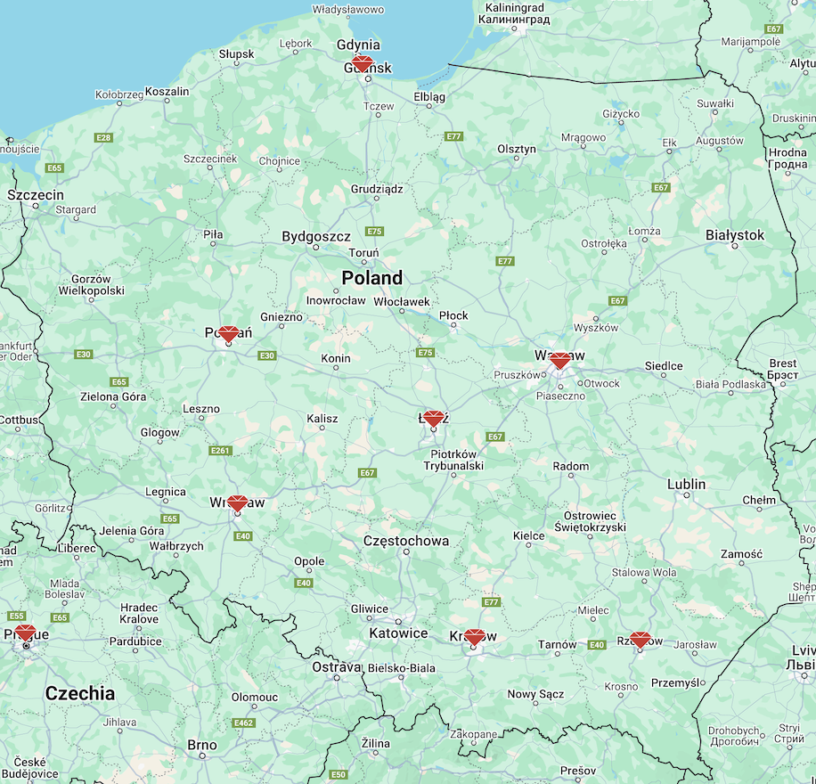
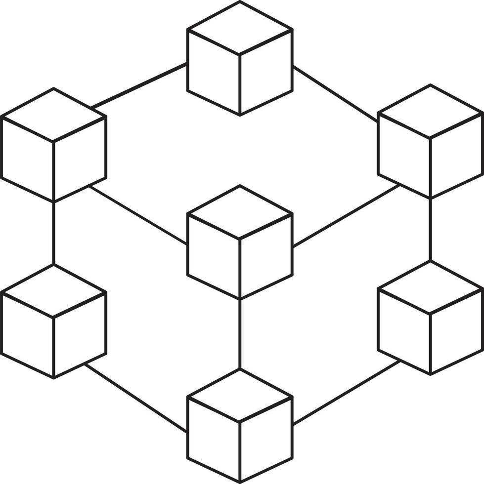

class: center, middle # Ruby Meetups Integration ### New technology for the community **Tricity Ruby User Group** **Chris (Krzysztof) Wawer — 22.05.2025** --- class: center, middle <center>  </center> --- class: center, middle <div class="graph-container"> <svg id="graph-basic" preserveAspectRatio="xMidYMid meet"></svg> </div> --- class: center, middle <div class="graph-container"> <svg id="graph" preserveAspectRatio="xMidYMid meet"></svg> </div> --- <div class="center"> <h1>Advantages of Ruby Meetups Federation</h1> </div> - **Easier access** <br> - **Bigger visibility** <br> - **Decentralization** --- class: center, middle # Technology? --- class: center, middle <center>  </center> --- class: center, middle <center> </center> --- class: center, middle <center> <img src="images/activitypub.svg" alt="" title="" width="80%"> </center> --- <div class="center"> <h1>ActivityPub</h1> </div> - **Easy integration** <br> - **Decentralized federation** <br> - **Scalability** <br> - **Flexibility** --- <div class="center"> <h1>What is ActivityPub?</h1> </div> - W3C Federation Standard (2018) - Enables communication between independent services - JSON-LD - Used in many social media apps: - **Mastodon** (microblogging) - **PeerTube** (videos) - **Bookwyrm** (books) --- # Implementation? ### a) Static Page ### b) Ruby on Rails app --- # TRUG - File structure ``` / │ ├── index.html └── archive.html ``` --- # How does it work? [.well-known/webfinger] ↳ points to → [Actor] [Actor] ↳ has → outbox ↳ includes → [Create] activity ↳ points to → [Event] ↳ may includes → [Talks], [Speakers], [Materials] --- # File structure - webfinger ``` / │ ├── index.html ├── archive.html │ └── .well-known/ └── webfinger ``` --- # webfinger ```json # /.well-known/webfinger { "subject": "acct:trug@trug.pl", "links": [ { "rel": "self", "type": "application/activity+json", "href": "https://trug.pl/actors/trug.json" }, { "rel": "http://webfinger.net/rel/profile-page", "type": "text/html", "href": "https://trug.pl" } ] } ``` --- # File structure - Actor ``` / │ ├── index.html ├── archive.html │ … │ └── actors └── trug.json ``` --- # Actor ```json # /actors/trug.json { "@context": "https://www.w3.org/ns/activitystreams", "id": "https://trug.pl/actors/trug.json", "type": "Group", "name": "Tricity Ruby User Group", "preferredUsername": "trug", "summary": "Ruby enthusiasts from Tricity (Gdańsk, Gdynia, Sopot).", "url": "https://trug.pl", "outbox": "https://trug.pl/outbox.json" } ``` --- # Optional fields ## 1. banner ```json "banner": { "type": "Image", "url": "https://trug.pl/banners/trug-banner.jpg" } ``` --- # Optional fields ## 2. icon ```json "icon": { "type": "Image", "url": "https://trug.pl/icons/trug-logo.png" } ``` --- # Optional fields ## 3. publicKey ```json "publicKey": { "id": "https://trug.pl/actors/trug#main-key", "owner": "https://trug.pl/actors/trug", "publicKeyPem": "-----BEGIN PUBLIC KEY-----\nMIIBIjAN...==\n-----END PUBLIC KEY-----" } ``` --- # Optional fields ## 4. location ```json "location": { "type": "Place", "name": "Hackerspace Tricity, Poland", "longitude": "54.3892594", "latitude": "18.5818967", } ``` --- # Optional fields ## 5. tag ```json "tag": [ { "type": "Hashtag", "name": "Ruby" }, { "type": "Hashtag", "name": "Meetup" } ] ``` --- # Optional fields ## 6. attachment ```json "attachment": [ { "type": "Link", "href": "https://www.facebook.com/TRUGmeetup", "name": "Facebook" } ] ``` --- # Inbox / Outbox - **Outbox**: Sends messages and activities (e.g., Create, Update). - Examples: - **Create**: When an actor creates a new event. - **Update**: When they update an event or a presentation. - **Inbox**: Receives messages and activities (e.g., Follow, Create). - Examples: - **Follow**: When a user starts following someone. - **Create**: When a user creates a new event that is sent to subscribers. --- # Outbox (1/4) ``` / │ ├── index.html ├── archive.html │ … │ └── outbox.json ``` --- # Outbox (2/4) ```json # /outbox.json { "@context": "https://www.w3.org/ns/activitystreams", "id": "https://trug.pl/outbox.json", "type": "OrderedCollection", "totalItems": 3, "orderedItems": [{...}, {...}, ...] } ``` --- # Outbox (3/4) ```json # /outbox.json { "@context": "https://www.w3.org/ns/activitystreams", "id": "https://trug.pl/outbox.json", "type": "OrderedCollection", "first": "https://trug.pl/outbox/page-1.json" } ``` --- # Outbox (4/4) ```json # /outbox.json { "@context": "https://www.w3.org/ns/activitystreams", "id": "https://trug.pl/outbox.json", "type": "OrderedCollection", "first": { "type": "OrderedCollectionPage", "href": "https://trug.pl/outbox/2024-05.json" } } ``` --- # Outbox page (1/2) ```json # /outbox/2024-05.json { "@context": "https://www.w3.org/ns/activitystreams", "id": "https://trug.pl/outbox/2024-05.json", "type": "OrderedCollectionPage", "partOf": "https://trug.pl/outbox", "next": "https://trug.pl/outbox/2024-06.json", "items": [ { "type": "Create", "object": "https://trug.pl/events/1.json" }, { "type": "Create", "object": "https://trug.pl/events/2.json" } ] } ``` --- # Outbox page (2/2) ```json # /outbox/2024-05.json { "@context": "https://www.w3.org/ns/activitystreams", "id": "https://trug.pl/outbox/2024-05.json", "type": "OrderedCollectionPage", "partOf": "https://trug.pl/outbox", "next": "https://trug.pl/outbox/2024-06.json", "items": [ { "type": "Create", "object": { ... } }, { "type": "Create", "object": { ... } } ] } ``` --- # Event ``` / │ ├── index.html ├── archive.html │ … │ └── events └── {event-id}.json ``` --- # Event ```json # events/2024-05-meetup.json { "@context": "https://www.w3.org/ns/activitystreams", "id": "https://trug.pl/events/2024-05-meetup.json", "type": "Event", "name": "TRUG #123", "startTime": "2024-05-15T18:00:00Z", "endTime": "2024-05-15T20:00:00Z", "location": { "type": "Place", "name": "Hackerspace Trójmiasto" }, "talks": [{ ... }, { ... }], "attributedTo": "https://trug.pl/actors/trug.json" } ``` --- # Talk ``` / │ ├── index.html ├── archive.html │ … │ └── talks └── {talk-id}.json ``` --- # Talk ```json # talks/2025-05-meetup-integration.json { "@context": "https://www.w3.org/ns/activitystreams", "id": "https://trug.pl/talks/2025-05-meetup-integration.json", "type": "Note", // "Presentation" "name": "Integracja Ruby Meetupów z ActivityPub", "content": "Jak można zintegrować grupy meetupowe Ruby z protokołem ActivityPub – prezentacja struktury plików, roli aktorów, oraz sposobu komunikacji między instancjami. Pokazujemy, jak grupy takie jak TRUG mogą publikować wydarzenia, tematy oraz materiały w sposób zdecentralizowany.", "attributedTo": "https://wawer.it/actors/chris.json", "inReplyTo": "https://trug.pl/events/2025-05-meetup.json", "attachment": [ { "type": "Link", "href": "...", "name": "Slajdy" }, { "type": "Link", "href": "...", "name": "Repozytorium" } ], "published": "2025-05-22T18:00:00Z", "url": "https://trug.pl/talks/activitypub-integration" } ``` --- # Speaker ``` / │ ├── index.html ├── archive.html │ … │ └── actors └── {person-id}.json ``` --- class: center, middle # New Website --- # Static Page - https://github.com/wafcio/trug.wawer.it - https://trug.wawer.it ## Proof of Concept - ActivityPub - https://github.com/wafcio/trug_ap/tree/activity_pub --- # What next? Applications: - Ruby on Rails for meetups - For conferences - For conferences - meetups, conferences aggregator --- class: center, middle # Questions ???